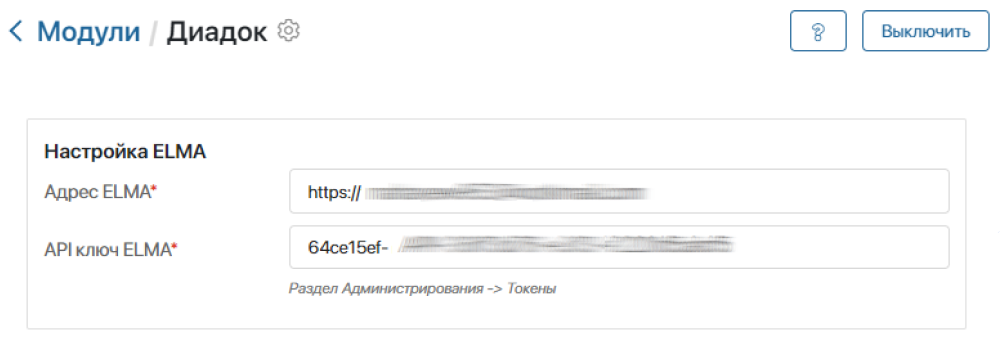
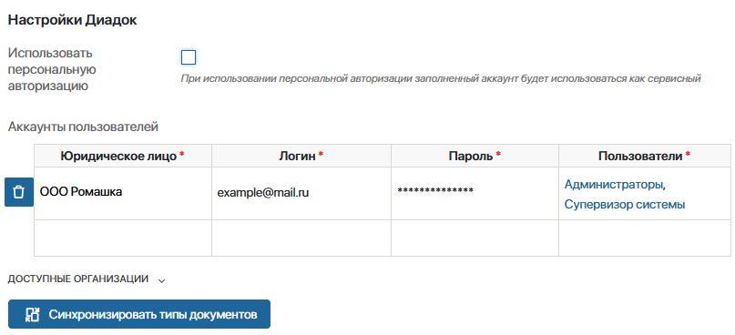
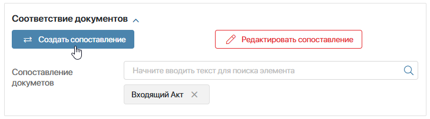
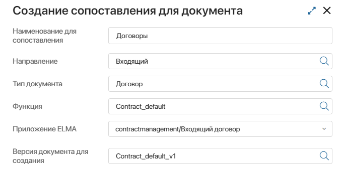
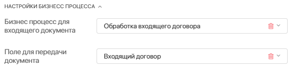
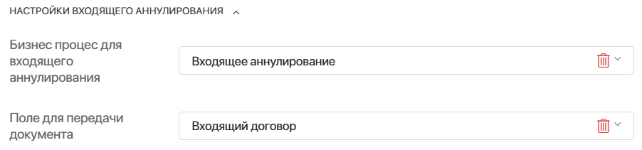
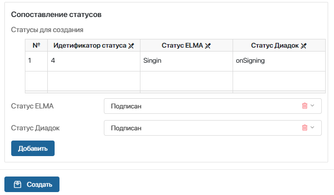
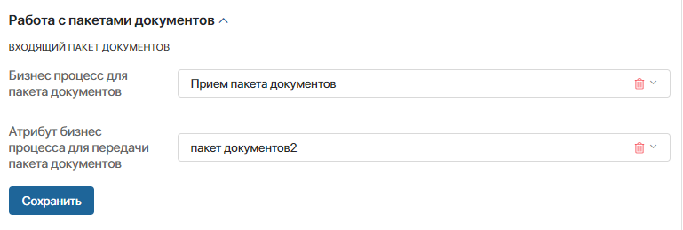
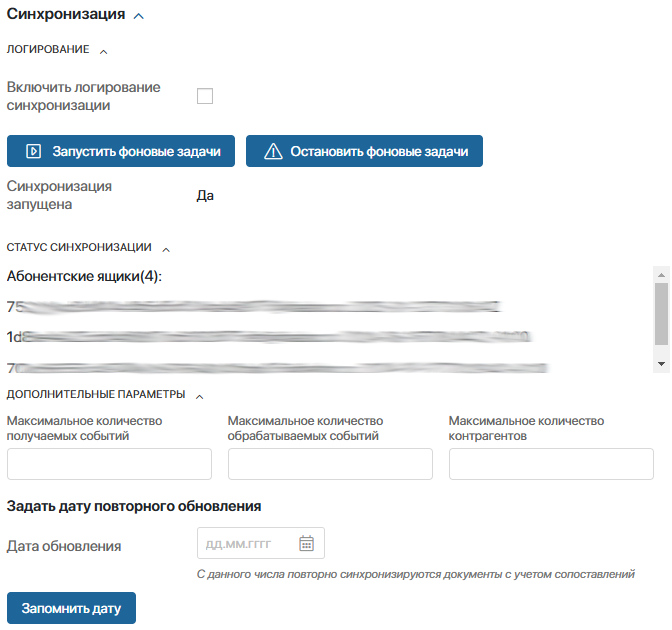

Вы можете установить решение Диадок версии 2.0, которое позволит:
- настроить использование одной учётной записи в Диадок для группы пользователей, созданной в ELMA365;
- выбрать дату, с которой запустится синхронизация ELMA365 с Диадок;
- отправлять документы от разных абонентских ящиков юридического лица в выбранное подразделение контрагента.
В состав Диадок версии 2.0 входят следующие компоненты:
- модуль Диадок 2.0 — модуль для работы с сервисом Диадок;
- раздел Диадок Модуль — раздел для корректной работы модуля. Не отображается в левом меню и не предназначен для работы пользователей. Его не нужно настраивать, изменения приведут к ошибкам в работе интеграции.
Установить Диадок версии 2.0
Чтобы установить Диадок версии 2.0, выполните следующие действия:
- На любой странице системы, в левом меню разделов нажмите на значок
 .
. - В открывшемся окне Настройка Разделов и Решений перейдите на вкладку Решения, нажмите кнопку +Добавить решение и выберите Скачать.
- В открывшемся каталоге ELMA365 Store выберите решение Диадок v2.0 и установите его.
Подробнее о процессе добавления решения в систему читайте в статье «Импорт решения из ELMA365 Store».
По окончании установки в систему будут добавлены модуль Диадок 2.0 и раздел Диадок Модуль.
начало примечание
Примечание
Для работы с Диадок в закрытом контуре настройте доступ до ресурсов сервиса Контур, а именно до адреса diadoc-api.kontur.ru. Также со стороны сервиса Контур могут потребоваться дополнительные настройки доступа к его ресурсам.
конец примечание
Настроить Диадок версии 2.0
Начало внимание
Для корректной работы Диадок версии 2.0 и выключите предыдущую его версию.
Конец внимание
Перейдите в раздел Администрирование > Модули. Вверху страницы в блоке Пользовательские модули найдите модуль Диадок 2.0 и нажмите на него.
Выполните настройки в следующих блоках:
Настройка ELMA
Чтобы синхронизировать ELMA365 и Диадок, заполните поля:

- Адрес ELMA* — укажите URL-адрес главной страницы ELMA365, куда вы установили Диадок версии 2.0;
- API ключ ELMA* — вставьте в это поле токен. Предварительно создайте его и скопируйте в разделе Администрирование > Токены. Подробнее об этом читайте в статье «Токены».
Настройки Диадок
Чтобы предоставить пользователям право отправлять документы в Диадок, настройте авторизацию для их аккаунтов. Это можно сделать одним из способов:

- Включить персональную авторизацию.
В этом случае пользователи сами вносят данные своего аккаунта в Диадок, когда работают с документом в рамках бизнес-процесса или через виджет.
Авторизация действует три минуты. По истечении этого времени пользователь вводит логин и пароль повторно.
Важно: если вы используете персональную авторизацию, в таблице Аккаунты пользователей укажите для учётной записи в ELMA365 данные одного аккаунта в Диадок. При этом у такого аккаунта должен быть доступ ко всем документам организации. Без этого нельзя синхронизировать типы документов.
- Сопоставить учётные записи в ELMA365 c аккаунтами в Диадок.
Внесите в таблицу Аккаунты пользователей логины и пароли в Диадок тех пользователей, которые смогут выполнять задачи в ELMA365 по обработке документов.
Для юридического лица, зарегистрированного в Диадок, можно создать несколько учётных записей. Каждую учётную запись в Диадок можно связать с конкретным пользователем, группой пользователей или элементом оргструктуры из ELMA365. Например, для группы пользователей Руководители можно настроить одну учётную запись в Диадок. Тогда все сотрудники, входящие в эту группу, смогут работать с документами в Диадок.
В таблице заполните поля:
- Юридическое лицо — выберите организацию из системного справочника Мои юридические лица, от имени которой будут выполняться действия в Диадок;
- Логин — введите логин учётной записи в Диадок;
- Пароль — укажите пароль учётной записи в Диадок;
- Пользователи — выберите пользователя, группу или элемент оргструктуры, которым предоставляете право подписывать и отправлять документы от данного аккаунта в Диадок.
Вы можете удалить строку таблицы, нажав значок корзины.
Синхронизировать типы документов
После заполнения данных в блоках Настройка ELMA и Настройки Диадок нажмите Синхронизировать типы документов, чтобы подтянуть данные из Диадок и ELMA365 для дальнейшей настройки.
Соответствие документов
В этом блоке выберите приложение типа Документ из ELMA365 для участия в обмене документами с Диадок. Если нужно, укажите бизнес-процесс для обработки входящего документа или для рассмотрения запроса на аннулирование документа. А также сопоставьте свойства выбранного приложения из ELMA365 и атрибуты в Диадок, статусы документа в ELMA365 и в Диадок.
Чтобы настроить соответствие документов:
- Нажмите кнопку Создать сопоставление.

- В открывшемся окне заполните поля:

- Наименование для сопоставления — рекомендуется давать наименование по названию приложения, для которого создаётся сопоставление, чтобы упростить дальнейшую работу и поиск;
- Направление — выберите документопоток в ELMA365, с которым будете работать:
- Входящий — документы, полученные из Диадок;
- Исходящий — документы, загружаемые в Диадок;
- Тип документа — выберите тип документа в Диадок. Подробнее с перечнем документов можно ознакомиться на сайте Диадок;
- Функция — укажите функцию, которая соответствует выбранному типу документа. Например, для типа документа Договор выберите функцию Contract_default;
- Приложение ELMA — выберите приложение типа Документ. Если в поле Направление установлено Входящий, в это приложение поступают документы из Диадок, а если выбрано Исходящий — документы создаются в этом приложении, а затем отправляются в Диадок.
начало внимание
Для одного приложения из ELMA365 можно назначить только одну функцию из Диадок.
конец внимание
- Версия документа для создания — укажите версию для выбранного типа документа. В Диадок может создаваться новая версия для любого типа документа. Чаще всего это связано с изменением законодательства в сфере документооборота. Пример смотрите на сайте Диадок.
- Далее для входящего документа отобразятся дополнительные поля, где можно указать процесс его обработки:

- Бизнес процесс для входящего документа — для выбора доступны процессы, созданные на уровне приложения, указанного выше в поле Приложение ELMA365;
- Поле для передачи документа — укажите переменную процесса типа Приложение, связанную с приложением типа Документ в ELMA365, для которого вы настраиваете сопоставление.
Если настройки заданы, то выбранный процесс можно запустить для документа, полученного из Диадок.
Вы можете настроить получение, отправку и подписание документов в бизнес-процессах, используя графические элементы, предназначенные для решения Диадок версии 2.0.
- Вы можете настроить автоматический запуск бизнес-процесса в ELMA365 каждый раз, когда контрагент отправляет запрос на аннулирование документа в Диадок. Для этого заполните поля:

- Бизнес процесс для входящего аннулирования — выберите настроенный процесс для обработки входящего аннулирования из Диадок. Такой процесс создаётся на уровне приложения, указанного в поле Приложение ELMA365;
- Поле для передачи документа — укажите переменную типа Приложение из контекста процесса. При создании этой переменной укажите приложение типа Документ, для которого вы настраиваете сопоставление.
- Соотнесите свойства приложения типа Документ в ELMA365 и и все атрибуты, использующиеся в Диадок. В противном случае работа с документами невозможна.
Важно: атрибуты в Диадок и свойства в ELMA365 должны соответствовать по типу данных. Например, если регистрационный номер хранится в ELMA365 как строка, его нельзя сопоставить с числовым полем Диадок.
Учитывайте особенности сопоставления атрибутов, в которых хранится денежная сумма. Атрибут в Диадок Сумма (Деньги) соответствует свойству типа Деньги (Российский рубль) из ELMA365. Для атрибутов с суммами в других валютах используются свойства Строка или Число.
Занесите в таблицу каждое свойство по отдельности:

- Атрибут ELMA — укажите свойство приложения типа Документ;
- Атрибут Диадок — выберите переменную, которая соответствует указанному выше свойству ELMA365.
Для сохранения записи в таблице нажмите Добавить. Чтобы удалить строку таблицы, нажмите значок корзины.
- Соотнесите статусы приложения типа Документ в ELMA365 и документа в Диадок по такому же принципу, как на предыдущем шаге.

- После заполнения всех полей нажмите кнопку Создать.
- В блоке Соответствие документов напротив поля Сопоставление документов нажмите на значок лупы. Выберите все приложения, для которых вы создали сопоставления. Они будут участвовать в обмене документами с Диадок.
- В блоке Соответствие документов можно внести изменения в настроенные сопоставления. Для этого нажмите Редактировать сопоставление. В открывшемся окне выберите созданное ранее сравнение для структуры документа. Оно загрузится на странице.
Работа с пакетами документов
В этом блоке можно указать бизнес-процесс обработки входящего пакета документов из Диадок. Процесс автоматически запустится, если поступит пакет документов из Диадок. Также будут созданы элементы приложений типа Документ в ELMA365, которые сопоставлены входящим документам в составе пакета.

- Бизнес процесс для пакета документов — для выбора доступны процессы, в контексте которых есть переменная типа Приложение с подтипом Несколько;
- Атрибут бизнес процесса для передачи пакета документов — выберите переменную типа Приложение с подтипом Несколько, в которую запишутся документы из полученного пакета.
Синхронизация
Синхронизация позволяет своевременно обмениваться данными между ELMA365 и Диадок. В этом блоке доступны следующие настройки:

- Логирование — для диагностики проблем в работе модуля можно регистрировать возникающие ошибки. Данные сохранятся в разделе Диадок Модуль > Логи в виде элементов приложения. Вы можете включать логирование в модуле на 5-15 минут. Это позволит собрать нужные данные и не перегружать оперативную память.
Для этого активируйте опцию Включить логирование синхронизации и выберите, какие записи отслеживать: логирование синхронизации, внешних запросов или внутренних запросов. - Фоновые задачи — синхронизацию можно включить в фоновом режиме, нажав кнопку Запустить фоновые задачи. После этого каждые три минуты начнут выполняться запросы в Диадок и обновляться данные в ELMA365.
Чтобы не получать новые входящие документы из Диадок, нажмите кнопку Остановить фоновые задачи. - Дополнительные параметры — вы можете управлять количеством событий, которые поступают из Диадок и обрабатываются в ELMA365 при синхронизации данных в рамках одного запроса. Это позволит стабилизировать нагрузку на ресурсы и предотвратить сбои в работе системы. Настройка доступна для всех поставок, но зачастую применяется при использовании модуля Диадок 2.0 в поставках ELMA365 On-Premises.
Рекомендуемые значения параметров для синхронизации данных при использовании модуля Диадок 2.0
|
- Задать дату повторного обновления — если пропадёт связь, возникнет ошибка при обмене документами. Чтобы обновить данные:
- Укажите дату обновления и нажмите кнопку Запомнить дату.
- Нажмите Запустить фоновые задачи. Синхронизируются данные за период с даты обновления по текущее число.
- После обновления данных в настройках отобразится информация об успешной синхронизации.
Начало внимание
Чем более раннюю дату вы выберете, тем больше времени может занять синхронизация. Вы можете продолжить работу с модулем, не дожидаясь окончания обновления данных.
Конец внимание
Когда вы установите параметры в блоках Настройка ELMA, Настройки Диадок, Соответствие документов и выполните настройку синхронизации, нажмите Сохранить внизу страницы.